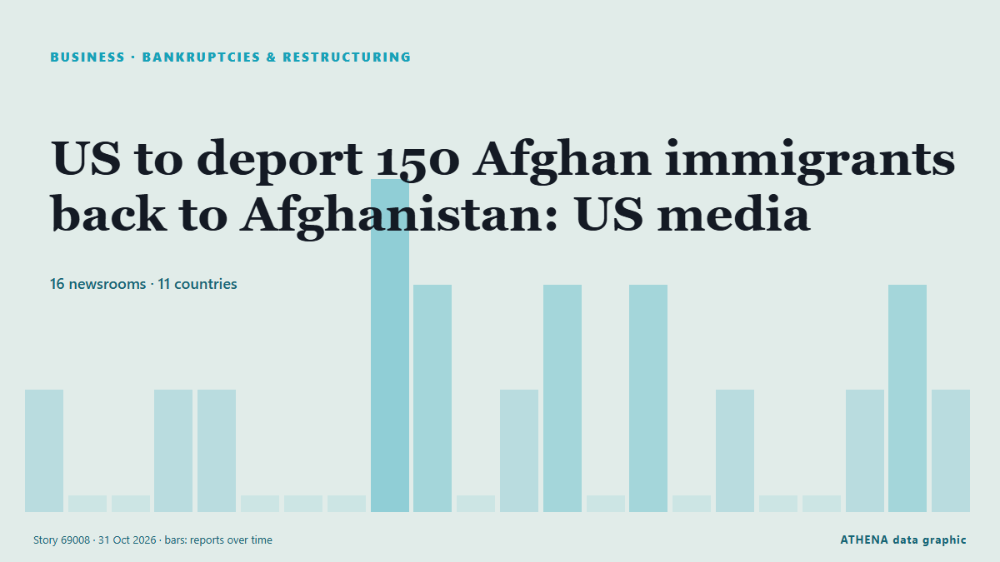

Bankruptcies & restructuring
| 18 Oct | 0 |
|---|---|
| 19 Oct | 0 |
| 20 Oct | 0 |
| 21 Oct | 0 |
| 22 Oct | 0 |
| 23 Oct | 0 |
| 24 Oct | 0 |
| 25 Oct | 0 |
| 26 Oct | 0 |
| 27 Oct | 0 |
| 28 Oct | 1 |
| 29 Oct | 2 |
| 30 Oct | 4 |
| 31 Oct | 0 |

US to deport 150 Afghan immigrants back to Afghanistan: US media
Trump administration plans to deport more than 150 Afghans via Pakistan, despite warnings from advocacy groups that they could face danger under Taliban rule. from The New Arab
5.8Importance
2.1Risk · moderate
87%Confidence
Libya’s eastern administration bars entry to Iranians, Afghans
TRIPOLI, Oct 28 - Libya’s eastern-based government banned the entry of Iranian and Afghan nationals through all land, sea and air ports, the government said late on Wednesday. from The Straits Times